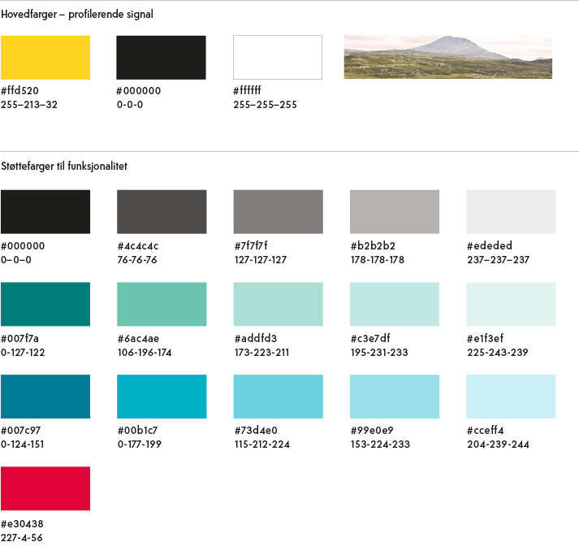

Fargepalett web
Hovedfarger
Gult, svart og hvitt - samt foto fra Telemark er hovedinntrykket i webdesignet. Det er definert støttefarger som brukes på underordnet nivå. Det vil være nødvendig på enkelte knapper og bakgrunner for å gjøre innholdet tilgjengelig.
Farger på tekst
- Løpende tekst: svart #000000
- Dato publisert: grå #7f7f7f
- Lenker: Mørk turkis #007f7a
- Besøkt lenke: Mørk blå #007c97
- In case of emergency: rød #e30438
Farger på bakgrunner
- Gul #ffd520
- Lys grå #ededed
- Lys turkis #e1f3ef
- Lys blå #cceff4
Lyse bakgrunner må alltid vurderes i forhold til lesbarhet og kontrast i forhold til universell utforming.
NB: Støttefargene fra denne paletten skal aldri brukes i trykksaker. Fargene er spesielt tilpasset web. Se egen palett for trykksaker.
